시연 전 개선 S4(2026-11-18 mac, D). 홈 화면의 질감·색감을 기준으로 다른 화면이 어긋난 곳을 모으고, 화면 인상을 크게 바꾸는 두 요소만 후보 3개씩 비교한다. 나머지는 기본값(Claude)으로 S5에서 바로 고친다. 미리보기 색은 warm 룩 토큰 값 그대로다.
Metro 8083(CI 없이 실행, 번들에 S2·S3 코드 확인), 위치 광주 북구, 로그아웃 상태. 원본: 개발산출물/시안/S4_감사_스크린샷/
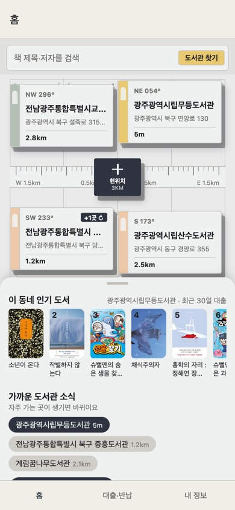
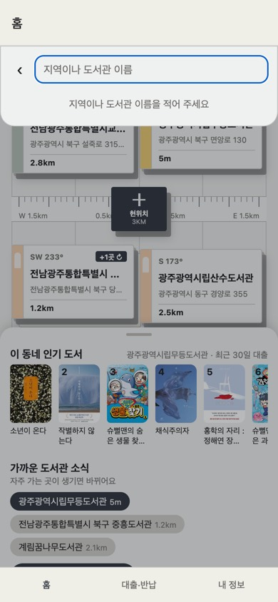
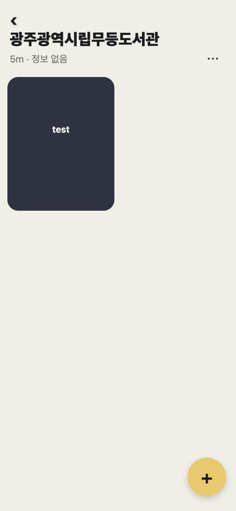
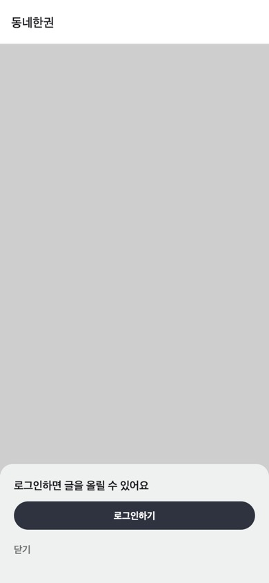
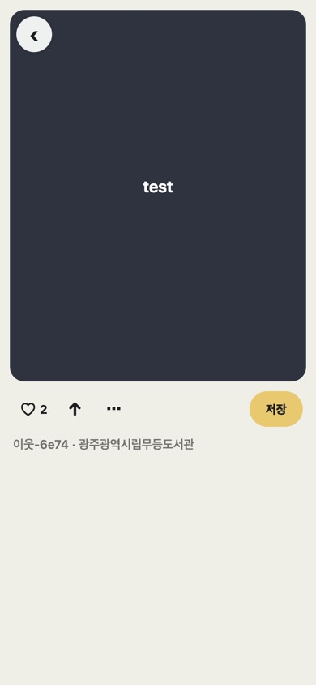
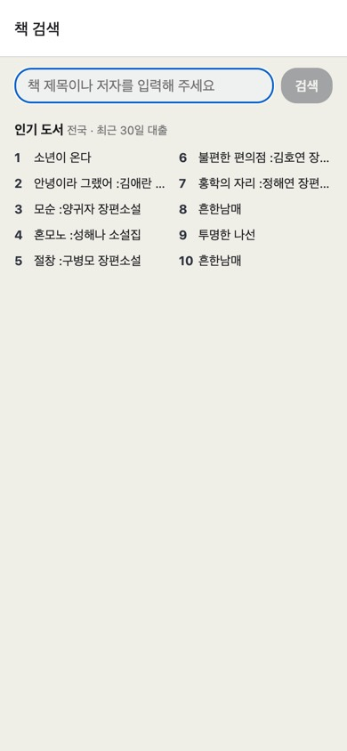
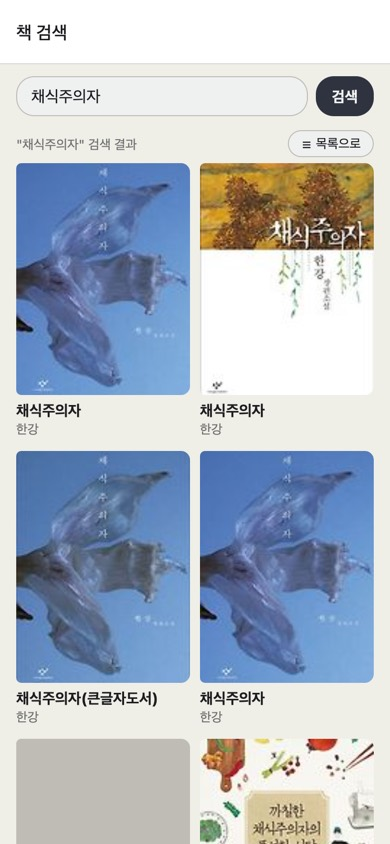
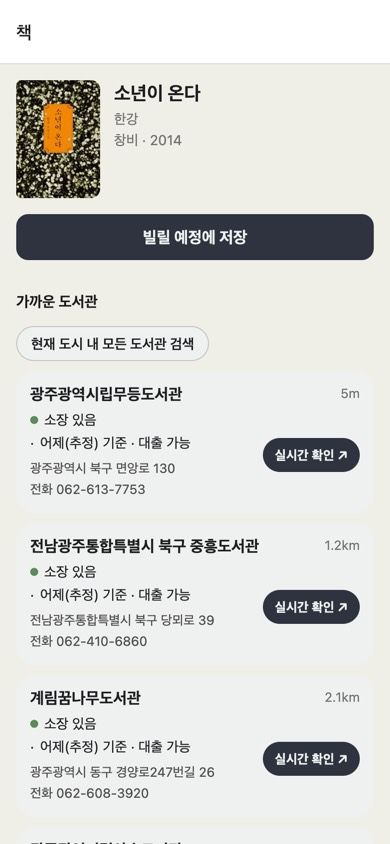
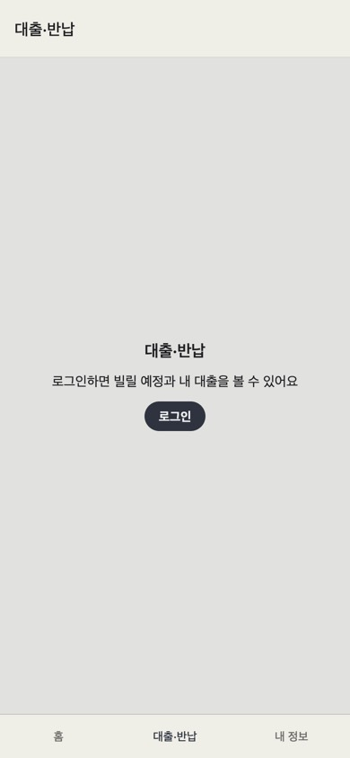
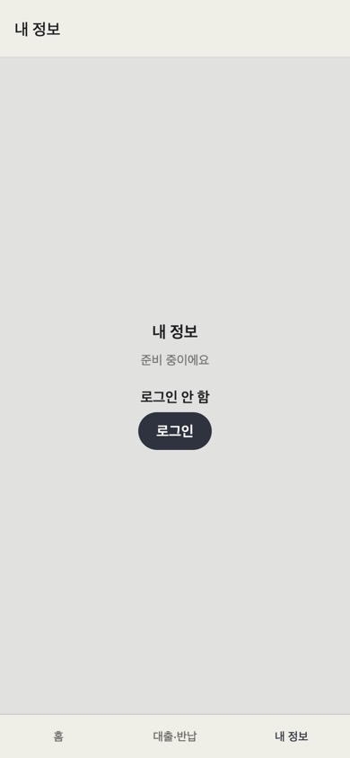
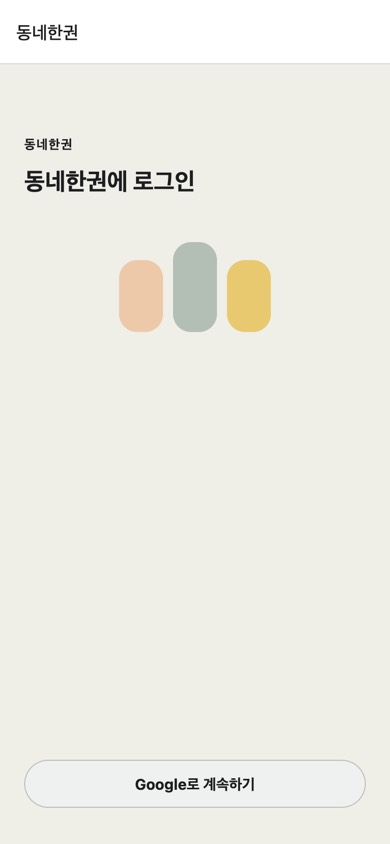
감사 표 전체는 개발산출물/진행_시연전개선.md S4 절. 요약: ① 머리 띠가 탭 화면은 cream, 책·검색·글쓰기·로그인은 순백 #FFFFFF ② 본문 바탕이 탭 화면 bg / 나머지 cream ③ 홈 블록만 줄눈·두께면·그림자가 있고 다른 카드는 평평 ④ 책 상세에 inkStrong 채움이 주 버튼 1 + "실시간 확인" 카드 수만큼(390×844에서 4개) ⑤ 입력칸 포커스 때 브라우저 기본 파란 테두리 ⑥ 상세 카드 상태 둘째 줄이 "·"로 시작 ⑦ 시작선 16/20/24/30이 섞임.
책 상세의 도서관 카드, 검색 결과, 빈 상태 카드처럼 "정보를 담은 면"이 홈 블록의 재료감(1px 줄눈 · 두께면 · 그림자)을 얼마나 가져올지. 화면을 열면 제일 먼저 보이는 차이다.
"빌릴 예정에 저장" 같은 주 행동과 "실시간 확인 ↗" 같은 카드 안 행동의 색·모양. 지금은 남색(inkStrong) 덩어리가 한 화면에 4개 이상 보인다(DESIGN.md "진한 채움은 주 행동 1개"와 어긋남).
| 항목 | 지금 | 바꿀 값 | 상태 |
|---|---|---|---|
| 머리 띠 색 | 책·검색·글쓰기·로그인 #FFFFFF(순백), 탭 화면 cream | 모두 cream + 아래 1px divider(탭 화면과 같게). 순백 금지 원칙 | 기본값(Claude) |
| 본문 바탕 | 탭 화면(대출·내 정보) bg, 나머지 cream | 그대로 둔다(Astra 지적 반영: bg 자체는 오류 아님) | 기본값(Claude) |
| 좌우 시작선 | 16 · 20(글쓰기 안내) · 24(로그인) · 카드 안 30 | 화면 바깥 16, 카드 안 12(카드 테두리부터). 홈 검색창 10·하단 창 14도 16으로 | 기본값(Claude) |
| 입력칸 포커스 | 브라우저 기본 파란 테두리(찾기 창·검색) | 파란 테두리 끔 → inkStrong 1.5px 테두리. 링크용 파랑 금지 원칙 | 기본값(Claude) |
| 상세 카드 상태 줄 | 좁은 칸에서 "소장 있음" / "· 어제(추정) 기준 · 대출 가능"으로 끊겨 둘째 줄이 "·"로 시작(S3 넘김) | 상태를 두 줄로 나눠 그린다: 1줄 "● 소장 있음", 2줄 "어제(추정) 기준 · 대출 가능"(가운데 점은 둘째 줄 안에서만) | 기본값(Claude) |
| 글자 단계 | 10·10.5·11·12·13·14·15·16·18·19·24·26·30·32 | 11 · 13 · 15 · 18 · 24(큰 제목) 다섯 단계로 맞춤. 방문 페이지 도서관 이름 26 → 24 | 기본값(Claude) |
| 로그인 색 값 | app/login.tsx TOKENS에 warm 색 직접 복사 | 테마 토큰(useTheme)으로 바꿈 — 룩 전환 가능 | 기본값(Claude) |
| 로그인 머리 | 머리 "동네한권" + 본문 작은 "동네한권" 두 번 | 머리 글자를 비움(본문 제목만) | 기본값(Claude) |
| 컨트롤 곡률 | 검색 입력·버튼 18, "빌릴 예정에 저장" 12, 홈 검색창 6·버튼 4 | 컨트롤은 radii.control(완전한 필), 홈 파사드 안 검색창은 홈 기준이라 그대로 | 기본값(Claude) |
2026-11-18 받음. 원문: 개발산출물/결과/홈_인기도서_S4_디자인검토.md(브랜치 feat/home-popular-books 15c4af9). Claude가 거른 결과:
| Astra 말 | Claude 판단 | 반영 |
|---|---|---|
| 카드 D(무광 면+얇은 받침) 추천 | 받아들임. 새 토큰 surfaceEdge·surfaceFoot은 기존 seamHairline·reliefBottomMid와 거의 같아 기존 토큰으로 바꿈 | ①에 D 추가·추천 |
버튼 D(중성 명도 actionStrong) 추천, B 비추천 | 후보로 받음. 추천은 B 유지 — 의견이 갈림(②의 추천 이유 참고) | ②에 D 추가 |
| Oxford 남색·toffee 갈색이 금지색과 충돌 | 거름. 확정된 룩 색이다. 파랑 금지는 링크용 파랑(DESIGN.md "보류") | 없음 |
시안 B 버튼 글자색 고정, B 그림자 .10 ≠ shadowAmbient .14 | 맞음. 그림자를 .14로 고침. 글자색은 앱에서 onFill 자동(warm에서 #1D1D1F) | 시안 수정 |
로그인 화면이 warm 색 값을 직접 복사(app/login.tsx:15 TOKENS) → 룩 전환 불가 | 맞음(확인). 토큰 규칙 위반 | 기본값(Claude)에 추가 |
| 방문 이름은 26(30은 뒤로가기 글자), 상세 카드 30 = 바깥 16 + 안 14, 검색 결과 표지 5/9/9/5 | 맞음. 감사 표를 바로잡음 | 진행 파일 감사 표 |
| 로그인 세 막대를 중성 면으로 | 보류. 확정 C-60 "주요 컬러 로고"를 바꾸는 제안 | D가 원하면 따로 |
"모든 본문을 cream으로 통일할 필요 없음", 대출·내 정보 bg 유지 가능 | 받아들임. 바탕 통일 기본값을 "머리 띠만 cream, 바탕은 그대로"로 줄임 | 기본값 표 |
| 개선 11항목 + 공통 누름 반응, 기능 제안 3개 | 규칙과 부딪치지 않는 것은 S5 후보 목록으로. 기능 제안 3개는 00 §5 "제안" | 진행 파일 S4 절 |
결정 전